1.1.3. 約数の個数¶
Code: multiple_and_divisor.py
数表を用いた高速化¶
約数の個数を求めるクエリが複数あるとき、数表を用いることで約数列挙を繰り返すよりも高速に答えることができる。
まず、倍数を列挙した数表を考える。この表は倍数列挙を繰り返し用いて、\(\mathcal{O}(nH_n) \sim \mathcal{O}(n \log{n})\) で埋めることができる。
(\(H_n\) は \(n\) の調和数)

約数の個数は、数表のうち着色セルの✔を数え上げたものとなる。
このとき、倍数は \(a \in [1, \sqrt{n}]\) の倍数だけを走査すればよい。
赤色のセルは \(a\) の倍数における \(a^2\) を表す。
個数をカウントする際、赤色セルの✔は1個、緑色セルの✔は2個としてカウントする。

実装¶
概要¶
整数 \(a \in [0, n]\) に対し、その約数の個数を求めるためのテーブルを作成する。
実装のポイント¶
数表を走査する際、直前までに得られた個数がわかれば十分なので、数表は1次元でよい。
計算量¶
前処理
count_divisors(n)\(\mathcal{O}(\sqrt{n} \log{n})\)
クエリ
約数の個数を取得 \(\mathcal{O}(1)\)
コード¶
[1]:
from __future__ import annotations
def count_divisors(n: int) -> list[int]:
counts = [0] * (n+1)
a = 1
while a * a <= n:
counts[a*a] += 1
for i in range(a*(a+1), n+1, a):
counts[i] += 2
a += 1
return counts